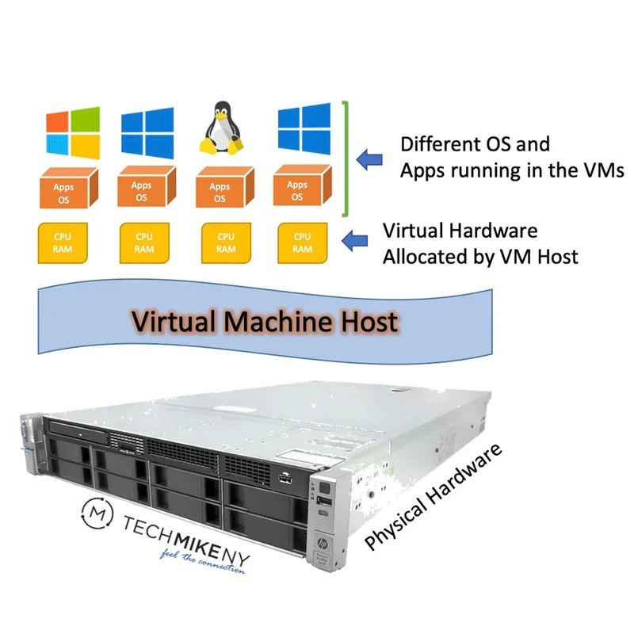

What Are Virtual Machines?
A virtual machine or VM is a software based emulation of a physical computer. It runs its own seperate operating system and can run its own aplications seperated to its own environment.
This creates an envirnment that simulates being a stadalone machine since any operations running on the host machine won't interfere with its operation.
In order to run on the host machine the VM is allocated resorces form the host machine like CPU, memory, storage, and even network acces if allowed. Given the host machines capabilites, multiple VMs can be run in tandem all in their own isolated environment
A common use of VMs are to create environments for testing software where it won't interfere with the host machine and vice versa.

Image taken From TechMikeNY.com
TechMikeNY